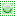
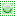

可停靠对话框→通道
高级用户

可停靠对话框→通道
通道对话框(  )分两部分，上半部分是颜色通道(模式通道)，下半部分是选区蒙版。
)分两部分，上半部分是颜色通道(模式通道)，下半部分是选区蒙版。
通道经常可以用来帮助创建选区。
提示
驿窗注：通道概念是一个比较常用的重要概念，如果您希望在平面相关领域发展，请务必掌握通道的应用。
概述
选区在本质上是通过通道来实现的。
与图像模式相关的通道可以称为模式通道。
模式通道是根据图像模式对像素进行分类，不是按原色对像素进行分类，比如HSV模式的图像(H=色相;S=饱和度;V=明度)，其模式通道为H通道、S通道、V通道(色相通道、饱和度通道、明度通道)。
RGB/CMYK模式通道稍微有点特殊，是按原色对像素进行分类，因为它们的模式是根据原色建立的。
专色通道是按原色对像素进行分类。(即，专色无法通过其它原色合成)
模式通道是相对于整个图像而言的。
RGB模式图像有三个模式通道(R通道、G通道、B通道)，CMYK模式图像有四个模式通道(C通道、M通道、Y通道、K通道)，灰度模式图像有一个模式通道(灰度通道)，索引图像有一个模式通道(索引通道)。
模式通道必须存在，无法删除，也无法添加。
除了模式通道外，图像还可以有alpha通道，用来存储透明度信息。
alpha通道即透明通道，二者是一回事：汉化时把alpha通道翻译成透明通道。
如果没有透明度信息，可以没有alpha通道。
从选区创建的通道可以称为选区蒙版。
选区蒙版主要是按坐标对像素进行分类。
快速蒙版与选区蒙版相同，也是按坐标对像素进行分类。
选区蒙版可见后(缩略图左侧显示眼睛图标
 )，即可在图像窗口中看到蒙版。
)，即可在图像窗口中看到蒙版。选区蒙版可见后，在图像窗口中的所有编辑操作，目标都变成蒙版，而不是图像。
编辑选区蒙版时，颜色建议使用黑白或灰度，因为彩色不太好找感觉，除非特殊需求。
选区蒙版可见后，如果想编辑图像而不是蒙版，请点击其缩略图左侧的眼睛图标(
)使其隐藏不显示即可。选区蒙版的作用是帮助我们创建选区。
使用通道，可以帮助我们创建复杂的选区，或者帮助我们快速创建选区。
模式通道不可移动位置，自己创建的通道(选区蒙版)可以移动位置，方法请参考工具箱⇒移动工具⇒移动通道/选区蒙版。
通道属性
这里仅解释通道的可见、链接、缩略图、名称这几项内容，其它内容请参考通道管理⇒创建新通道。
通道堆栈中，通道缩略图左侧如果显示眼睛图标(
)，表示通道是可见的。点击眼睛图标可以隐藏眼睛图标，即通道隐藏不可见。通道堆栈上半部分的颜色通道(模式通道)，例如RGB图像，默认三个颜色通道都会显示眼睛图标(
)；如果您点击使只有红色通道左侧显示眼睛图标，另外两个眼睛图标均隐藏不显示，那么，图像将只以现有像素的红色色值显示。通道堆栈下半部分的选区蒙版部分，按Shift键点击眼睛图标(
)，会导致仅被点击的通道可见，其它所有通道均隐藏不可见。通道堆栈下半部分的选区蒙版部分，通道缩略图左侧如果显示锁链图标(
 )，表示通道被关联。被关联的通道可以同时被操作，比如选中一个显示锁链图标的通道，然后点击通道堆栈底部的 转换为选区 图标(  )，则所有显示锁链图标的通道都会转换为选区，最终结果是这些选区的并集。
)，表示通道被关联。被关联的通道可以同时被操作，比如选中一个显示锁链图标的通道，然后点击通道堆栈底部的 转换为选区 图标(  )，则所有显示锁链图标的通道都会转换为选区，最终结果是这些选区的并集。通道堆栈中，点击通道缩略图不松手持续一小段时间后，缩略图会放大显示。
通道堆栈上半部分的颜色通道(模式通道)，缩略图右边的文字是通道名称，不可修改。
通道堆栈下半部分的选区蒙版部分，缩略图右边的文字是通道名称，双击可修改。(F2)
{kind=link}
通道管理
在通道堆栈的底部，从左到右有六个按钮(参考截图 可停靠对话框→通道 )，可以用来管理通道：
(
 )创建新通道：点击可以在通道堆栈下半部分的选区蒙版区域中当前通道上方创建一个新通道，默认名称为“通道”，双击名称可以修改名称。如果点击时按Shift键，会按最近一次创建新通道时的参数直接创建新通道。(通道堆栈上半部分的颜色通道不可删除，也不可创建新通道)
)创建新通道：点击可以在通道堆栈下半部分的选区蒙版区域中当前通道上方创建一个新通道，默认名称为“通道”，双击名称可以修改名称。如果点击时按Shift键，会按最近一次创建新通道时的参数直接创建新通道。(通道堆栈上半部分的颜色通道不可删除，也不可创建新通道)
创建新通道
通道名称：这里可以输入通道的名称。
颜色标签：点击其中一个颜色按钮后，创建好的通道的”眼睛”图标会显示这个背景色。如果图像中有很多个通道，这个功能可能会很有用。
填充不透明度：这里的通道是选区蒙版，所以可以像蒙版一样设置透明度。
通道颜色：这里的通道是选区蒙版，所以可以像蒙版一样设置颜色。
从选区初始化：从现有选区创建通道，等同于菜单 选择→保存到通道。
可见：是否可见。
已链接：是否链接。
锁定像素：激活后，无法对像素进行编辑。
锁定位置和大小：激活后，通道的位置和尺寸不可修改。
(
 )上移通道：点击可以把当前通道向上移动一级；按Shift键点击可以把通道移到蒙版部分的顶部。
)上移通道：点击可以把当前通道向上移动一级；按Shift键点击可以把通道移到蒙版部分的顶部。(
 )下移通道：点击可以把当前通道向下移动一级；按Shift键点击可以把通道移到通道堆栈的底部。
)下移通道：点击可以把当前通道向下移动一级；按Shift键点击可以把通道移到通道堆栈的底部。(
 )复制通道：点击可以创建一个当前通道的副本，放在当前通道的上方。
)复制通道：点击可以创建一个当前通道的副本，放在当前通道的上方。
点击时按Shift键会把转换的选区与当前存在的选区合并，相当于并集；
点击时按Ctrl键会从当前存在的选区减去转换的选区，相当于差集；
点击时按Ctrl+Shift键会把转换的选区与当前存在的选区相交，保留共同的部分，相当于交集；
(
 )删除通道：点击可以删除当前通道。
)删除通道：点击可以删除当前通道。
通道弹出菜单
在通道堆栈中右键点击通道，会弹出一个菜单：
通道弹出菜单
编辑通道属性：请参考通道管理⇒创建新通道。
颜色标签：请参考通道管理⇒创建新通道。
新建通道：请参考通道管理⇒创建新通道。
上移通道：请参考通道管理⇒创建新通道。
下移通道：请参考通道管理⇒创建新通道。
复制通道：请参考通道管理⇒创建新通道。
删除通道：请参考通道管理⇒创建新通道。
通道到选区：把当前通道转换为选区，现有选区会消失。
另外，GIMP支持快速蒙版，快速蒙版也是选区蒙版，相关说明请参考菜单 选择→切换快速蒙版。